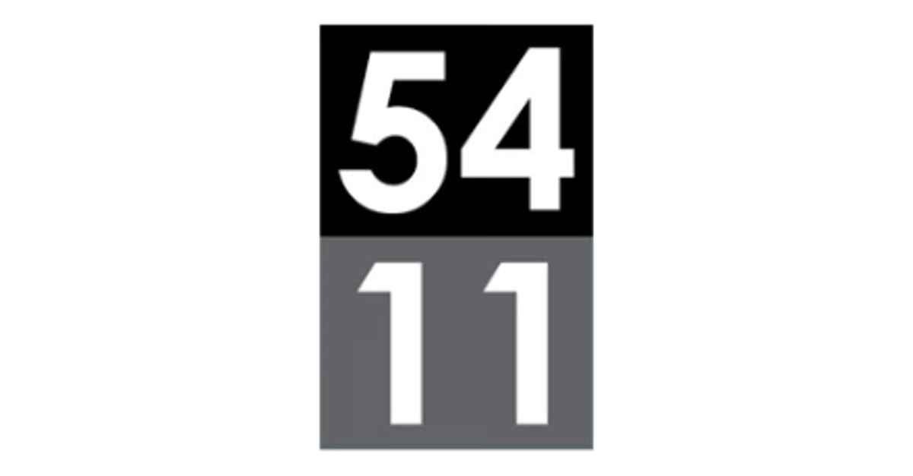

Una selección de trabajos en los que participé. En todos el punto de partida fue el mismo: entender el negocio con datos antes de proponer hacia dónde moverlo.
Proyectos
Havanna
Alimentos y cadena de cafeterías · Argentina
Havanna es una empresa argentina productora de alimentos y una reconocida cadena de cafeterías, cuyo emblema es la fabricación y venta de alfajores y chocolates artesanales.
Etapa: expansión internacional sin rentabilidad
El problema
Un negocio muy concentrado en el alfajor, una expansión que crecía en locales pero no en rentabilidad y una cultura interna poco permeable a la innovación.
Lo que hicimos
- Repensamos el espacio y ampliamos la franja horaria de consumo.
- Instalamos una dinámica de innovación que reivindica el origen marplatense de la marca.
- Transformamos la exportación de producto en exportación de experiencia.
- #research
- #data analysis
- #innovation

BZ
Sala de bingo y entretenimiento · Berazategui, Buenos Aires
BZ es una sala de bingo ubicada en Berazategui, provincia de Buenos Aires.
Etapa: negocio maduro en categoría declinante
El problema
Toda la operación dependía de una categoría con tendencia en caída y competencia digital creciente, apoyada en un público de nivel socioeconómico medio-bajo y de rango etario alto.
Lo que hicimos
- Ampliamos el concepto estratégico del azar al entretenimiento, sumando gaming, shows de stand up y otras propuestas para público joven.
- Migramos todos los sistemas —transaccional, RRHH, ERP central y ERP de gastronomía— para ganar control y capacidad de análisis.
- Reemplazamos la sala oscura y fría por espacios amplios, con luz natural y verde.
- #data analysis
- #strategy
- #clustering
- #software implementation
Aprendo Leyendo
Educación · Programa de alfabetización
Aprendo Leyendo es un programa de alfabetización basado en neurociencia.
Etapa: idea validada, todavía sin estructura de empresa
El problema
Una excelente idea, con resultados probados en el aula, pero sin la estructura de empresa que le permitiera escalar ni salir a buscar inversión.
Lo que hicimos
- Armamos el plan de negocios y la valuación para presentar a inversores.
- Estructuramos y negociamos el plan comercial y logístico.
- Desarrollamos el canal directo de venta.
- #valuation
- #strategy
- #business development

5411 Empanadas
Retail y producción de alimentos · Chicago, EE. UU.
5411 Empanadas es una cadena de retail con fábrica propia de empanadas en Chicago, Estados Unidos.
Etapa: crecimiento con gestión artesanal
El problema
La administración funcionaba sin procesos definidos y el negocio no contaba con el financiamiento necesario para seguir creciendo.
Lo que hicimos
- Automatizamos los procesos de control de producción.
- Estructuramos los datos del negocio para poder analizarlos.
- Elaboramos el plan de crecimiento y la valuación de la compañía para presentar a inversores.
- #valuation
- #data analysis
- #business development
Un hilo en común
Son cuatro industrias distintas y cuatro problemas distintos, pero el recorrido se repite: entender el negocio con datos, encontrar el espacio que nadie está ocupando y convertirlo en decisiones concretas.